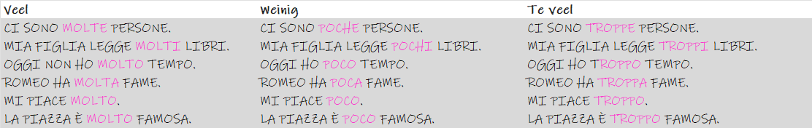

Poco Molto Troppo
bijwoorden
bijvoeglijke naamwoorden
Molto, poco, troppo
Molto, poco, troppo kunnen bijwoorden of bijvoeglijke naamwoorden zijn. Als ze bijvoeglijke naamwoorden zijn verandert het geslacht. Als bijwoord blijven ze onveranderd.
Ik heb hieronder gebruik gemaakt van voorbeeldzinnen uit de (degelijke) website italiano bello.
Voorbeeldzinnen
Hieronder staan diverse voorbeeldzinnen met molto, poco, troppo. Je kan deze inoefenen bij de rubriek zinnen oefenen.
| italiaans | nederlands |
|---|---|
| Dovrò essere breve perché non abbiamo molto tempo. | Ik zal het kort moeten houden, want we hebben niet veel tijd. |
| È complicato e non abbiamo molto tempo. | Het is ingewikkeld en we hebben niet veel tijd. |
| È la prima ragazza che frequento dopo molto tempo. | Ze is het eerste meisje met wie ik sinds lange tijd uitga. |
| Ho lavorato in caserma molto tempo. | Ik heb lang in de kazerne gewerkt. |
| Impiegarono molto tempo per terminare queste costruzioni. | Ze hebben er lang over gedaan om deze constructies af te maken. |
| Ma in prigione hai molto tempo per pensare. | Maar in de gevangenis heb je veel tijd om na te denken. |
| Necessitano di molto tempo per produrre risultati visibili. | Het duurt lang voordat ze zichtbare resultaten opleveren. |
| Non abbiamo più molto tempo. | We hebben niet veel tijd meer. |
| Non è efficiente perché richiede molto tempo. | Het is niet efficiënt omdat het veel tijd kost. |
| Non ho dedicato molto tempo al giardino. | Ik heb niet veel tijd in de tuin doorgebracht. |
| Passa molto tempo in altre sue proprietà. | Besteed veel tijd aan zijn andere eigendommen. |
| Passava molto tempo in camera nostra. | Veel tijd doorgebracht in onze kamer. |
| Passo molto tempo cercando ragioni o risposte. | Ik besteed veel tijd aan het zoeken naar redenen of antwoorden. |
| Sbrigati, non avete molto tempo. | Schiet op, je hebt niet veel tijd. |
| Significa che non abbiamo molto tempo. | Het betekent dat we niet veel tijd hebben. |
| Trovare alternative e collaudarle può richiedere molto tempo. | Alternatieven vinden en testen kan tijdrovend zijn. |
| E poi ho davvero molta fame. | En dan heb ik echt ontzettende honger. |
| Ehi, spero che non abbiate molta fame. | Hé, ik hoop dat je niet te hongerig bent. |
| Guarda mamma, devi avere molta fame. | Kijk mam, je moet erg hongerig zijn. |
| Ho molta fame e detesto mangiare da solo. | Ik heb erg honger en ik haat het om alleen te eten. |
| Io non molta fame. | Ik heb niet veel honger. |
| Lei ha molta fame. | Ze heeft erge honger. |
| Ma non aveva molta fame. | Maar hij had niet veel honger. |
| Non ho più molta fame come una volta... | Ik heb niet meer zo'n honger als vroeger... |
| Quando c'è un temporale, ha molta fame. | Als het stormt, heeft hij erge honger. |
| Ci sono molti libri per tutti. | Er zijn veel boeken voor iedereen. |
| Comunque, se tutto va bene, abbiamo venduto molti libri. | Hoe dan ook, hopelijk hebben we veel boeken verkocht. |
| Esistono molti libri a questo riguardo. | Er zijn veel boeken over dit onderwerp. |
| Ha pubblicato molti libri e vinto numerosi premi internazionali. | Hij heeft vele boeken gepubliceerd en talloze internationale prijzen gewonnen. |
| Lui ha molti libri per giovani. | Hij heeft veel boeken voor jongeren. |
| Non abbiamo molti libri a casa nostra. | We hebben niet veel boeken in huis. |
| Qui ci sono molti libri e riviste. | Er zijn hier veel boeken en tijdschriften. |
| Uno scrittore deve vendere molti libri per averli. | Een schrijver moet veel boeken verkopen om ze te krijgen. |
| A volte può essere difficile farlo se hai passato troppo tempo da solo. | Soms kan het moeilijk zijn om dit te doen als je te veel tijd alleen hebt doorgebracht. |
| È da troppo tempo che le stai dietro. | Je zit al te lang achter haar aan. |
| Eppure questo settore viene ignorato da troppo tempo. | Toch is dit gebied veel te lang genegeerd. |
| Faccio questo lavoro da troppo tempo. | Ik doe dit werk al te lang. |
| Forse pensava che io passassi troppo tempo sullo spettacolo. | Misschien dacht hij dat ik te veel tijd aan de show besteedde. |
| Hai passato troppo tempo nel mondo reale. | Je hebt te veel tijd in de echte wereld doorgebracht. |
| Hai trascorso troppo tempo in cantina. | Je hebt te veel tijd in de kelder doorgebracht. |
| Ho passato troppo tempo dietro una scrivania. | Ik heb te veel tijd achter een bureau doorgebracht. |
| Il problema era realmente che troppo tempo stava passando su questo. | Het probleem was eigenlijk dat er te veel tijd aan werd besteed. |
| Ma ho passato troppo tempo a cercare una persona. | Maar ik heb te veel tijd besteed aan het zoeken naar één persoon. |
| Ok, abiti qui da troppo tempo. | Oké, je woont hier al te lang. |
| Passava troppo tempo nella biblioteca in cui lavorava. | Hij bracht te veel tijd door in de bibliotheek waar hij werkte. |
| Quando passi troppo tempo con una persona... | Als je te veel tijd met één persoon doorbrengt... |
| Senti, ti conosco da troppo tempo per non accorgermene. | Luister, ik ken je te lang om het niet op te merken. |
| So anche che passi troppo tempo a dormire. | Ik weet ook dat je te veel tijd doorbrengt met slapen. |
| Voglio dire, quella ragazza è single da troppo tempo. | Ik bedoel, dat meisje is al te lang vrijgezel. |
| Abbiamo molto poco tempo per cambiare. | We hebben heel weinig tijd om te veranderen. |
| Comunque abbiamo poco tempo prima che lasci la città. | We hebben echter weinig tijd voordat hij de stad verlaat. |
| Ho deciso di passare al meglio il poco tempo che ci resta insieme. | Ik heb besloten om het meeste te halen uit de korte tijd die we nog samen hebben. |
| In questo bellissimo posto avrà poco tempo per svagarsi. | Op deze prachtige plek heb je weinig tijd om te ontspannen. |
| Mi avete cambiato la vita in così poco tempo. | Je hebt mijn leven in zo'n korte tijd veranderd. |
| Non troverai di meglio in così poco tempo. | Beter vind je niet in zo'n korte tijd. |
| Perché c'è tanto lavoro e poco tempo. | Want er is veel werk en weinig tijd. |
| Ci sono troppe persone a quel tavolo. | Er zitten te veel mensen aan die tafel. |
| Ci sono troppe persone che corrono qui intorno oggi. | Er lopen hier vandaag te veel mensen rond. |
| Ci sono troppe persone che guardano e nessun modo per seguirli. | Er kijken te veel mensen en er is geen manier om ze te volgen. |
| Ci sono troppe persone sul pianeta. | Er zijn te veel mensen op de planeet. |
| Ci sono troppe persone... troppi odori. | Er zijn te veel mensen... te veel geuren. |
| Fin troppe persone comprano il primo paio che trovano carino. | Veel te veel mensen kopen het eerste paar dat ze schattig vinden. |
| Mi sono fidato di troppe persone. | Ik vertrouwde te veel mensen. |
| Perché ci sono troppe persone, di sotto. | Omdat er te veel mensen beneden zijn. |
| Poi non c'è voluto tanto... c'erano troppe persone. | Toen duurde het niet lang... er waren te veel mensen. |
| Sono morte troppe persone per colpa mia. | Er zijn te veel mensen gestorven door mij. |
| Usare troppo poco cioccolato crea quindi una consistenza troppo morbida. | Door te weinig chocolade te gebruiken ontstaat er dus een te zachte textuur. |